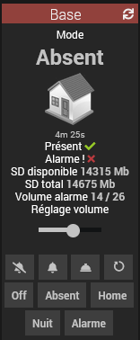
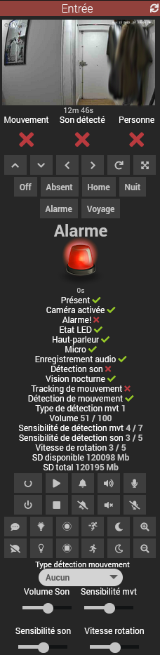
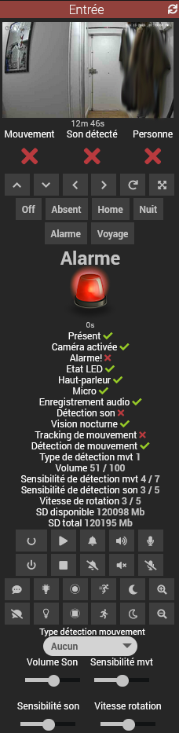

Installer le plugin et ses dépendances.
Note: L'installation des dépendances n'installe PAS l'image eufy-security-ws.
Vous avez le choix entre les modes local et distant pour docker:
L'installation du mode local a pour prérequis docker déjà installé et configuré.
Si ce n'est pas le cas installer le plugin officiel docker management ou en ligne de commande:
$ apt-get install docker.io
Configuration post-installation:
eufy-security-wseufy-security-wsTRUSTED_DEVICE_NAME utilisé pour se connecter au serveur Cloud EufyEufy-WSLe container eufy-security-ws doit déjà être installé sur un docker distant.
Vous pouvez copier et utiliser le script resources/eufyctl.sh pour installer et tester manuellement l'image eufy-security-ws sur un serveur distant:
eufyctl.sh install|uninstall|status|test|stop|start <device> <login> <passwd> [ port ]
eufy-security-ws, 127.0.0.1 par défauteufy-security-ws, 3000 par défauteufy-security-ws et sa connexion au service Cloud EufyNotes:
- Le daemon Eufy ne démarrera pas si le container eufy-security-ws ne peut pas se connecter au service Cloud Eufy
- La version du container est indiquée dans le champ Version
En cas de problème vérifier la connexion avec le container via la commande suivante:
resources/eufyctl.sh test
Vous devriez obtenir l'output suivant:
{"type":"result","success":true,"result":{"state":{"driver":{"version":"2.4.0","connected":true,"pushConnected":true}
Note: connected et pushConnected doivent être à true
Voir également la log eufy_service_setup

Note: pour l'instant seuls certains modèles ont été testés. Si votre modèle n'est pas suporté vous pouvez m'envoyer le résutat de la commande resources/test_eufy.py
Voir ici pour plus d'infos.

Liste et statut des devices reconnus

 

La commande URL snaphot contient l'URL de l'image sur le serveur
Vous pouvez utiliser mon widget ImageViewer
Pensez à activer les notifications d'image dans les paramètres de vos devices depuis l'application Eufy sans quoi les snapshots ne seront pas mis à jour
Le flux RTSP fonctionne dans le plugin Camera
Sur les caméras à batterie il doit être activé/désactivé via les commandes de l'équipement.
L'IP est celle de la base et live0..liven indiquent le numéro de la caméra, cf ce screenshot:

Voir ici selon votre modèle
Voir ici